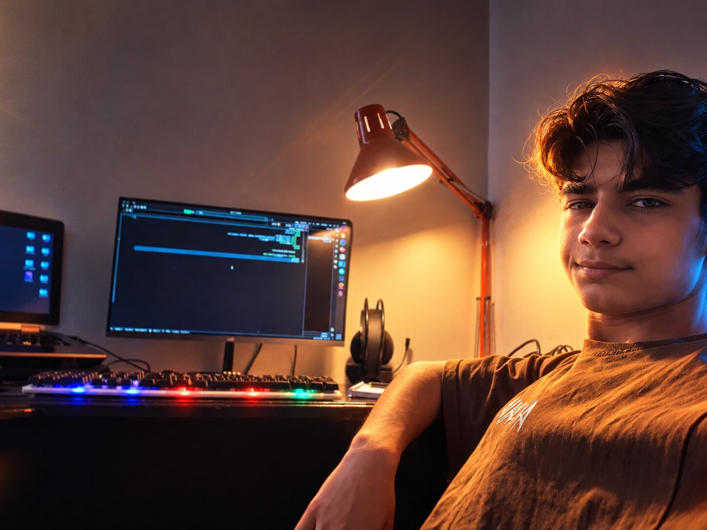

01 /
توسعه وب
ساخت صفحات ساختاریافته، ریسپانسیو و قابل دسترسی با HTML، CSS و JavaScript.
مهارتهای منبه وبسایت شخصی من خوش اومدی؛ جایی برای معرفی مسیر یادگیری، مهارتها و یادداشتهای من درباره طراحی و برنامهنویسی وب.

ساخت تجربههای قابلاستفاده، سریع و هماهنگ؛ با تمرکز بر اصول وب و نیاز واقعی کاربر.
ساخت صفحات ساختاریافته، ریسپانسیو و قابل دسترسی با HTML، CSS و JavaScript.
مهارتهای منصفحات مرتب با تایپوگرافی مناسب، چیدمان دقیق و تعاملات کوچک اما مؤثر.
بخش پروژههاکاهش منابع غیرضروری و اولویت دادن به سرعت لود، اسکرول و واکنش به کلیک.
فناوریهایی که در مسیر یادگیری و توسعه وب با آنها کار میکنم.
نکتهها و تجربههای آموزشی در زمینه برنامهنویسی، طراحی وب و عملکرد بهتر.
از HTML آماده تا بودجه عملکرد؛ مسیر ساده و قابلاندازهگیری برای ساخت صفحه سریع.
مطالعه مقالهچطور ظاهر حرفهای، ریسپانسیو و انیمیشن نرم را با CSS ساده بسازیم؟
مطالعه مقالهزمانی که یک سایت به فریمورک نیاز ندارد و APIهای مرورگر کافی هستند.
مطالعه مقالهبرای ارتباط، پرسش یا همکاری از راههای موجود در صفحه تماس استفاده کن.